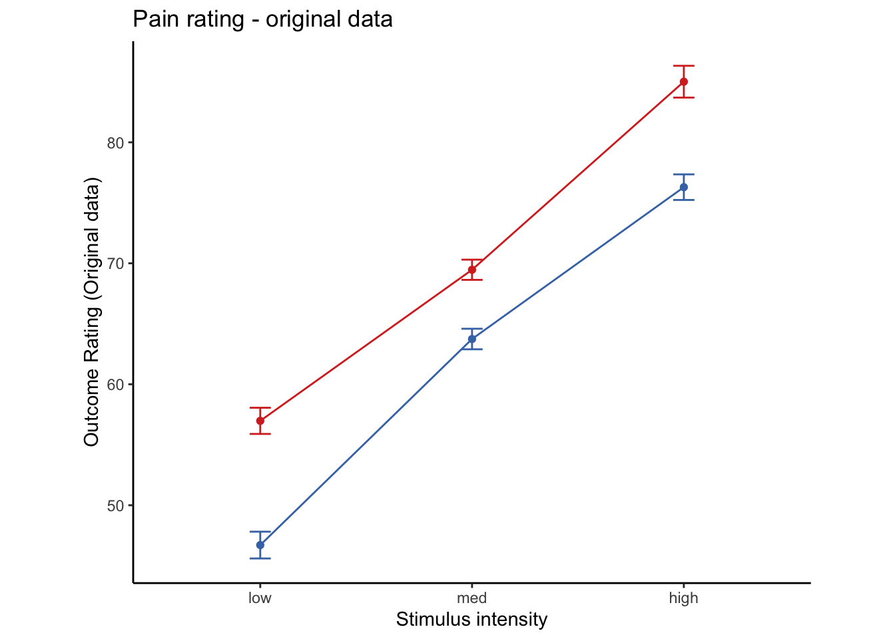
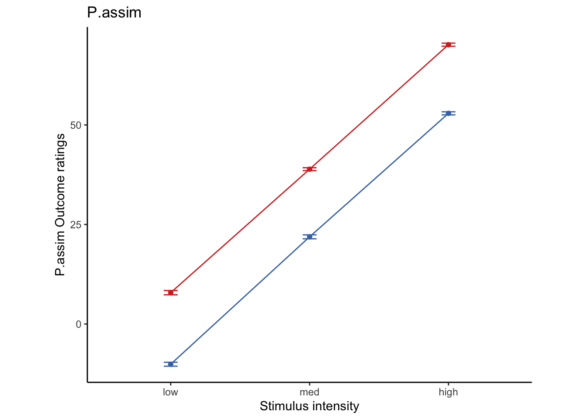
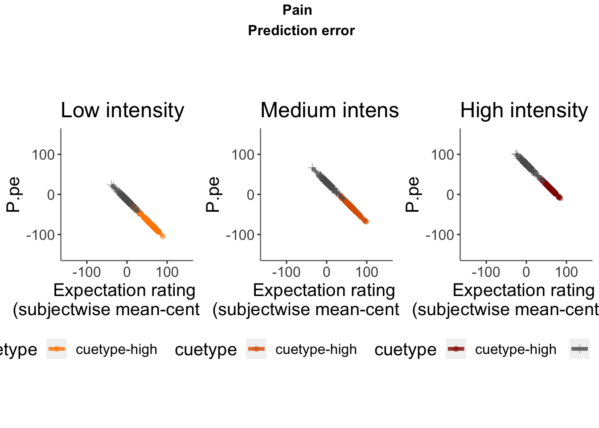

get pain relationship, controlling for cue, cuetype, expect
model.stim <- lmer(event04_actual_angle ~
STIM_linear +
CUE_high_gt_low + STIM_quadratic+ EXPECT_demean +
EXPECT_cmc +
ses +
(1|sub), data = df
)
# CUE_high_gt_low+STIM+EXPECT_demean
sjPlot::tab_model(model.stim,
title = "Multilevel-modeling: \nlmer(NPSpos ~ CUE + STIM + EXPECT_demean + SES + (1| sub), data = pvc)",
CSS = list(css.table = '+font-size: 12;'))
Multilevel-modeling:
lmer(NPSpos ~ CUE + STIM + EXPECT_demean + SES + (1| sub), data = pvc)
|
|
event04_actual_angle
|
|
Predictors
|
Estimates
|
CI
|
p
|
|
(Intercept)
|
71.33
|
68.56 – 74.10
|
<0.001
|
|
STIM linear
|
29.89
|
28.43 – 31.34
|
<0.001
|
|
CUE high gt low
|
-2.04
|
-3.55 – -0.53
|
0.008
|
|
STIM quadratic
|
1.34
|
0.07 – 2.62
|
0.039
|
|
EXPECT demean
|
0.30
|
0.28 – 0.33
|
<0.001
|
|
EXPECT cmc
|
0.93
|
0.84 – 1.02
|
<0.001
|
|
sesses-03
|
-7.22
|
-8.86 – -5.59
|
<0.001
|
|
sesses-04
|
-7.45
|
-9.07 – -5.83
|
<0.001
|
|
Random Effects
|
|
σ2
|
366.84
|
|
τ00sub
|
157.35
|
|
ICC
|
0.30
|
|
N sub
|
96
|
|
Observations
|
4004
|
|
Marginal R2 / Conditional R2
|
0.645 / 0.751
|
ntrials = 12
lowintens = 48;
medintens = 49;
highintens = 50;
stim <- 48:50
painmean = 30 # average pain; arbitrary, on a 0 - 100 scale
painslope = fixEffect_expect['STIM_linear',1] # rise in pain per unit change in stim (per degree)
painslope_stan = 0.33621048
stdCoef.merMod <- function(object) {
sdy <- sd(getME(object,"y"))
sdx <- apply(getME(object,"X"), 2, sd)
sc <- fixef(object)*sdx/sdy
se.fixef <- coef(summary(object))[,"Std. Error"]
se <- se.fixef*sdx/sdy
return(data.frame(stdcoef=sc, stdse=se))
}
stdCoef.merMod(model.stim)
## stdcoef stdse
## (Intercept) 0.00000000 0.000000000
## STIM_linear 0.31648413 0.007848709
## CUE_high_gt_low -0.02640086 0.009953683
## STIM_quadratic 0.01621649 0.007849931
## EXPECT_demean 0.22157672 0.009947333
## EXPECT_cmc 0.69471095 0.034434185
## sesses-03 -0.08777975 0.010153298
## sesses-04 -0.09126342 0.010120143
# # library(limma)
# S <- rep(stim,times=ntrials) # stim
# C <- rep(rep(c(1,-1), each = 3), times = 6) #cue
# E <- painslope * (C + rnorm(length(C))) + painmean # pseudo nociception
# Szscore <- (S - mean(S)) / sd(S)
df$S <- as.numeric(mapvalues(df$stimintensity,
from = c("low", "med", "high"), c(48, 49, 50)))
df$C <- as.numeric(mapvalues(df$cuetype,
from = c("cuetype-low", "cuetype-high"), c(-1, 1)))
df$E <- painslope * (df$C + rnorm(length(df$C))) + painmean
df$Szscore <- (df$S - mean(df$S, na.rm = TRUE)) / sd(df$S)
df$Pcalib = df$Szscore * painslope + painmean + rnorm(length(df$C))
model.stim2pain <- lmer(Pcalib ~ S + (1|sub), df)
b_stim2pain = fixef(model.stim2pain)[2] #0.4126089 #36.5757
df$Sprime = df$Szscore * b_stim2pain + painmean # subjective pain experience, converted to a scale of 0-180, in order to match expectation ratings
# df$Sprime = df$S * b_stim2pain
df <- df %>%
group_by(sub) %>%
mutate(E = as.numeric(E)) %>%
mutate(avg_E = mean(E, na.rm = TRUE)) %>%
mutate(E_demean = E - avg_E) %>%
mutate(E_cmc = avg_E - mean(avg_E))
Lineplots Original
## Automatically converting the following non-factors to factors: cue_name

Lineplots P.assim
## Automatically converting the following non-factors to factors: cue_name

P.assim ~ demeaned_expect _ cue _ stim
Lineplots P.pe
## Automatically converting the following non-factors to factors: cue_name
P.pe ~ demeaned_expect _ cue _ stim

Lineplots P.adapt
## Automatically converting the following non-factors to factors: cue_name
P.adapt ~ demeaned_expect _ cue _ stim